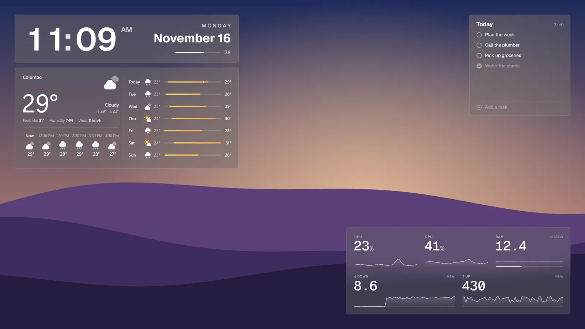
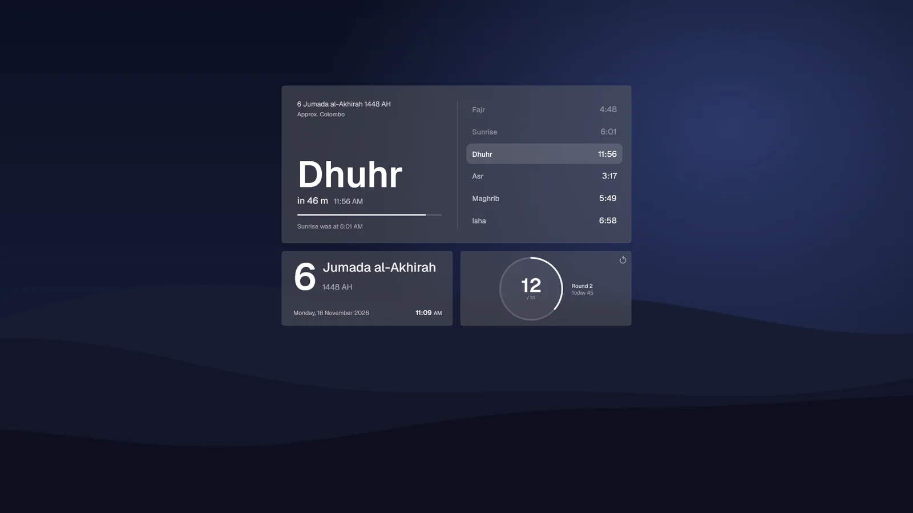

58 widgets, and 39 of them are free
Each one sits on your desktop behind your windows. Drag it anywhere, resize it from any edge, and pick its font, text colour and glass.

Clocks
- Glass Digital
- Analog
- Minimal
- Date
- Day Progress
- Dot Matrix
- Rings
- Seven Segment
- Stopwatch
- Text Clock
- World Clock
- Big TypePro
- BinaryPro
- FlipPro
- Nixie TubePro
- OrbitPro
- Word ClockPro
- World Time BarPro
Productivity
- Calendar
- Countdown
- Focus Timer
- Habits
- Notes
- Timer
- To-do
- Water
- Word of the Day
- AgendaPro
- Pinned FolderPro
Weather
- Weather
- Sun & Moon
System
- PC Monitor
- Battery
- Disks
- Network Speed
- Recycle Bin
- System Info
- App LauncherPro
- Game TimePro
- PingPro
- Top AppsPro
Utilities
- Calculator
- Currency
- Lock Keys
Wellbeing
- Breathe
- Eye Rest
- Screen Time
Photos
- Your GIF
- Photo SlideshowPro
Setup
- Divider
- Label
- Year in Dots
- AuroraPro
Islamic
- Prayer Times
- 99 NamesPro
- Hijri & DatePro
- Ramadan TrackerPro
- TasbihPro
Widgets marked Pro can be tried on your desktop for 10 minutes each. Pro isn't for sale yet.
Light enough to leave running
Widgets run all day, so they have to stay out of the way. One small app runs every widget, with no web browser inside it, and widgets rest while a window covers them.
| On the desktop | Processor | Memory |
|---|---|---|
| One clock | 0.1 to 0.2% | 86 MB |
| Five everyday widgets | 0.13% | 97 MB |
| Twelve widgets | 0.44% | 113 MB |
Measured on one laptop (Intel Core i7-10750H, 12 threads) in November 2026, with the widgets in view and the gallery closed. Processor is the share of the whole processor; memory is the app's own private memory. One run each, while the laptop was in use, so your numbers will differ.
Rests when covered
A widget that's hidden behind a window stops updating. Timers, Screen Time and Prayer Times keep counting.
Lighter glass for live wallpapers
With Wallpaper Engine or Lively, you can switch the blur off from the tray icon, so Windows doesn't re-blur a moving picture.
Saves everything
Positions, sizes and settings come back after a restart. It can start with Windows, and you can turn that off.

Prayer times, free
Prayer Times is in the free set. It counts down to the next prayer and lists the day's times, calculated on your PC for the place you choose.
- 10 calculation methods, including Muslim World League, ISNA, Umm al-Qura and Karachi
- Standard or Hanafi Asr
- Adjust each prayer by a few minutes, and the Hijri date by a day or two
- An optional reminder at each prayer time
Times are calculated, so check them against your local mosque and adjust if needed. Tasbih, 99 Names, Ramadan Tracker and Hijri & Date come with Pro.
Free now, Pro later
The free widgets are the full app, not a trial. Pro adds the rest when it arrives.
Free
On the Microsoft Store now
- 39 widgets, with no time limit
- Every font, ink colour and glass style
- No account, no ads
Pro
Not for sale yet
- 19 more widgets, including Flip, Word Clock, Agenda, Tasbih and 99 Names
- Try any Pro widget on your desktop for 10 minutes now
- Planned as a one-time purchase through the Microsoft Store, with no subscription
Your desktop stays yours
There's no account and nothing to sign in to. The app has no ads, analytics or tracking. Notes, lists and settings stay on your PC.
What goes online
Only Weather, Currency, Agenda and Ping connect to the internet, and each sends only what it needs: Weather sends the place you chose to MET Norway.
Place search is offline
Finding your town for Weather or Prayer Times searches a list built into the app, so what you type never leaves your PC.
The details
The privacy policy lists every file the app keeps and every request it makes.
Questions
Is it safe to install?
It comes from the Microsoft Store, which checks every app before listing it. Feather Widgets installs for your Windows account only and doesn't need administrator rights.
Which PCs does it run on?
Windows 11, and Windows 10 version 2004 or later, on a 64-bit (x64) PC.
How do I add widgets?
Open the widget gallery from the Feather Widgets icon in the taskbar's corner (the system tray). Drag a widget onto your desktop, or click it to customise it first. Right-click any widget on your desktop to change its style, size or settings.
Will it slow down my PC or my games?
It's built to stay light: see the measured numbers. Widgets covered by a game or any other window stop updating until you can see them again.
Can I share my layout?
Yes. Right-click the tray icon and choose Setups > Share this setup to save a .featherwidgets file, then send it. Double-clicking the file opens it in Feather Widgets. Personal things like notes, lists, calendar links and folder paths are left out of the file.
How do I stop it starting with Windows, or remove it?
Right-click the tray icon and turn off Settings > Start with Windows, or in Windows Settings > Apps > Startup. To remove it, uninstall Feather Widgets from Windows Settings > Apps > Installed apps.
Who makes it?
Feather Widgets is made by Ammar Arquil, an independent developer. Questions, ideas and bug reports are welcome at Support.FeatherWidgets@gmail.com.